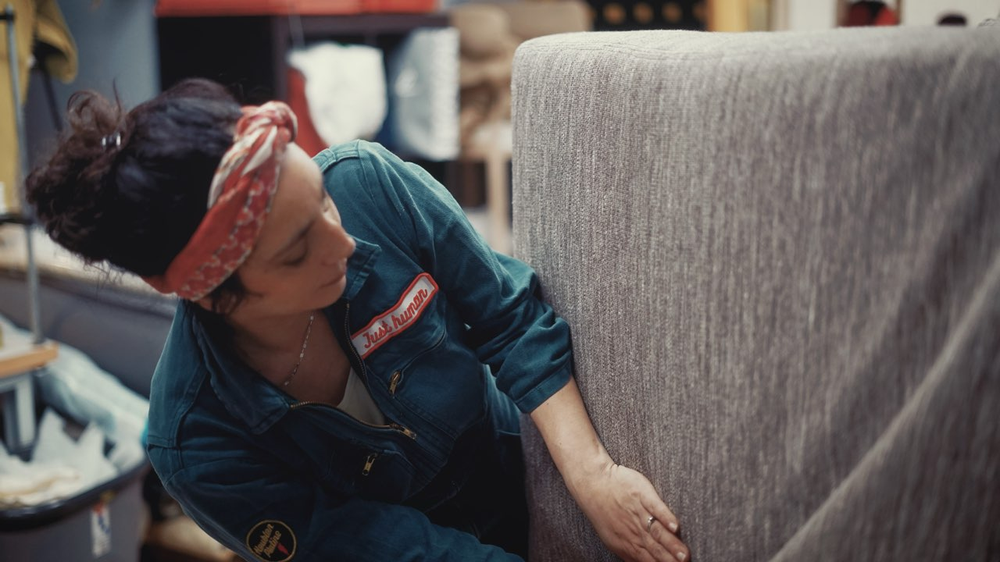
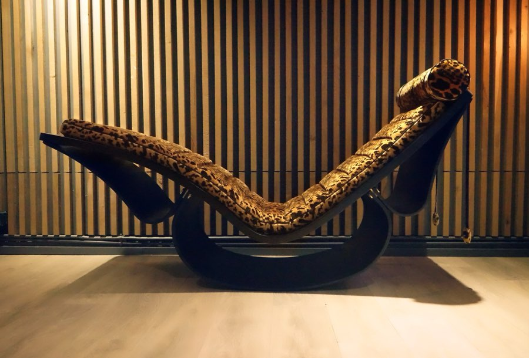
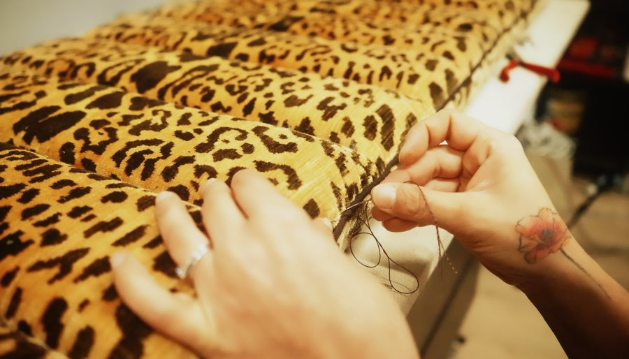
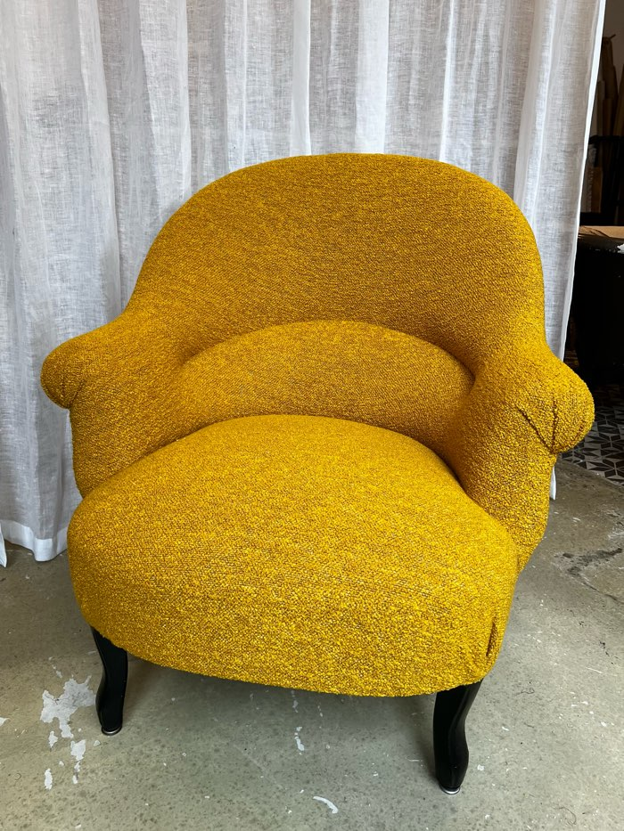
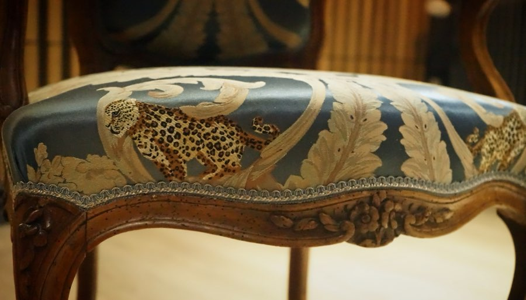
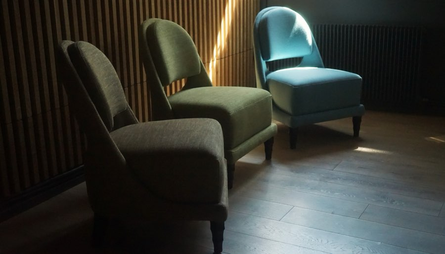
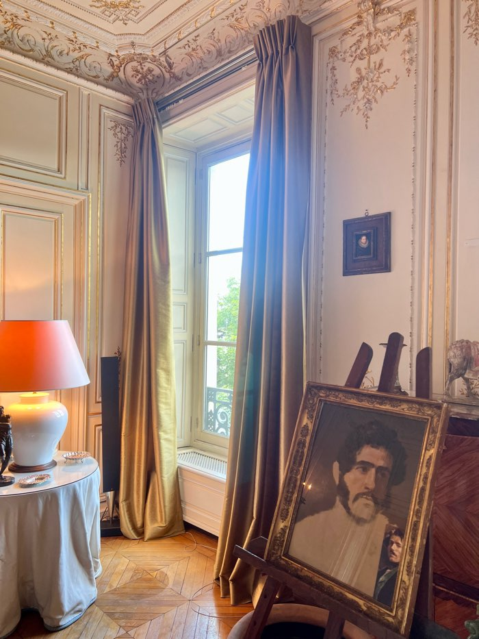
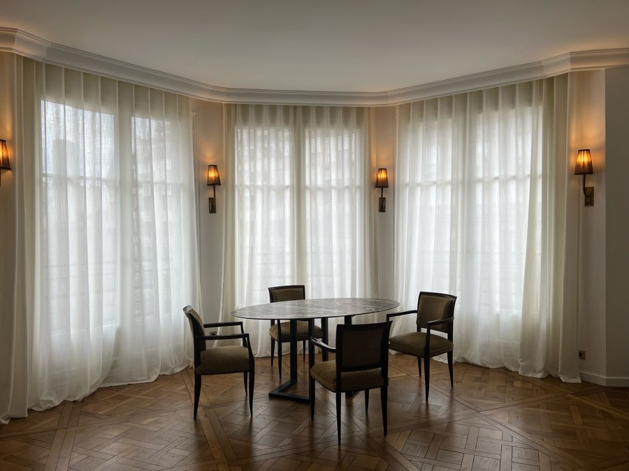

Tapissier décorateur à Paris 11e
Réfection de sièges, créations sur mesure, rideaux et stores.
L'atelier restaure les sièges anciens selon les techniques traditionnelles, conçoit des pièces sur mesure et confectionne rideaux, voilages et stores. Pour les particuliers comme pour les architectes d'intérieur et les décorateurs.

Nos engagements
Chaque pièce qui passe par l'atelier a déjà une histoire. Notre rôle est de la prolonger, parfois de l'écrire à nouveau, avec la même attention pour le détail, le choix des matières et la justesse du geste.
- La formation
- Lirayen Rojas-Diaz est diplômée du CFA d'ameublement La Bonne Graine. Elle s'est ensuite formée auprès de maîtres tapissiers et de maisons reconnues.
- Les techniques
- Sangles, ressorts, crin animal, finitions à la main : un siège ancien est refait comme il a été construit. Les méthodes contemporaines s'y ajoutent quand la pièce le demande.
- Le suivi
- Du devis à la livraison, chaque projet se construit en dialogue : vos besoins, les matières, les coloris, le calendrier.


Prestations
De la restauration d'un siège Louis XV à la création d'une banquette, en passant par la confection de rideaux pour un appartement haussmannien, chaque projet reçoit la même attention.
-
Réfection traditionnelle
Restauration de sièges anciens dans le respect des techniques d'origine : sangles, ressorts, crin animal, finitions à la main.
- Fauteuils, bergères, cabriolets
- Banquettes et lits de jour
- Capitonnage
- Passementerie
-
Création sur mesure
Des pièces uniques pensées pour vos espaces. Les matériaux, les textures et les coloris sont choisis avec vous, en accord avec le lieu.
- Banquettes
- Têtes de lit
- Assises et dossiers en forme
-
Décoration et couture
L'habillage textile de vos pièces : rideaux, voilages, stores bateau, panneaux japonais, coussins, tentures murales.
- Plis flamands, tête wave, œillets
- Stores bateau
- Velours non feu
Réalisations
Une sélection de projets récents : sièges anciens, pièces de designers, rideaux et stores pour des intérieurs parisiens.
Sièges








Rideaux et stores




Notre histoire

Tout a commencé avec une passion pour la couture.
Dès mon plus jeune âge, j'ai été fascinée par la création et le design textile. Après une formation initiale, j'ai approfondi mes compétences auprès de maîtres artisans et de maisons reconnues.
Mon oncle, mon mentor, maître tapissier, est bien plus qu'un artisan talentueux. Il est un guide précieux, un modèle d'intégrité et de passion.
Attirée par l'histoire et l'artisanat qui entourent la tapisserie, j'ai suivi une formation spécialisée, où j'ai appris les techniques traditionnelles comme les méthodes contemporaines.

L'atelier
L'atelier reçoit sur rendez-vous, au cœur du 11e arrondissement. Venez avec votre projet, vos pièces, vos inspirations : nous en parlons sur place.
- Adresse
- 58 rue Trousseau, 75011 Paris
- Métro
- Ledru-Rollin, Faidherbe-Chaligny
- Horaires
- Du lundi au samedi, 9h à 18h
- Téléphone
- 06 09 26 27 59
- atelier.buho@gmail.com
Prendre rendez-vous
Décrivez votre projet en quelques lignes. Nous revenons vers vous sous 48 h ouvrées pour parler de vos besoins, du calendrier et d'un rendez-vous à l'atelier.